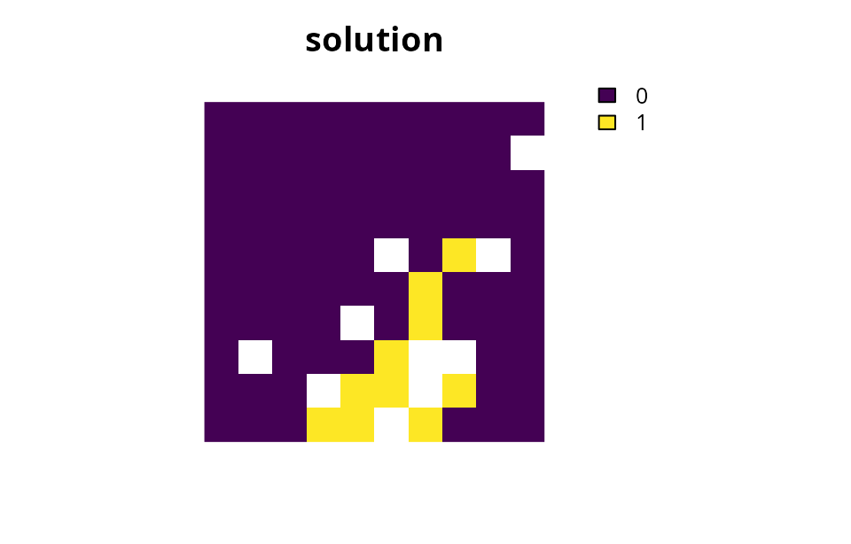
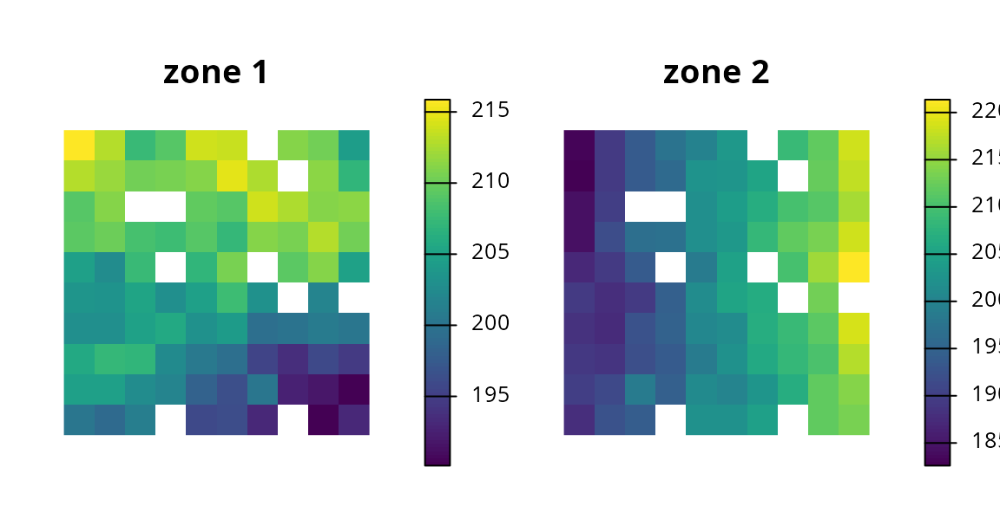
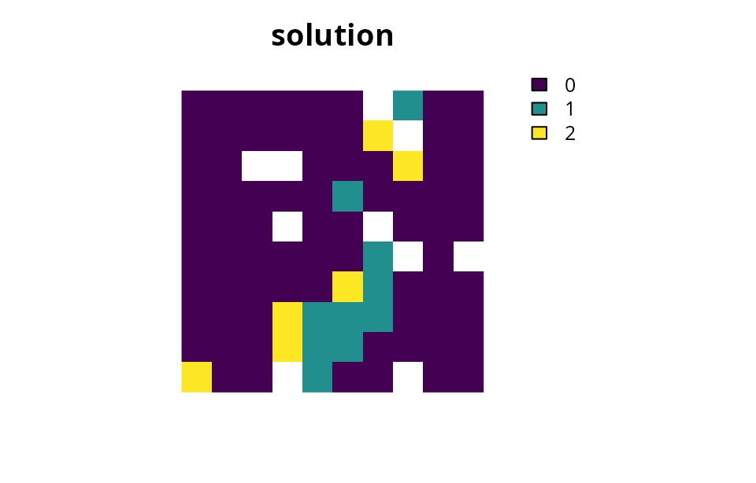
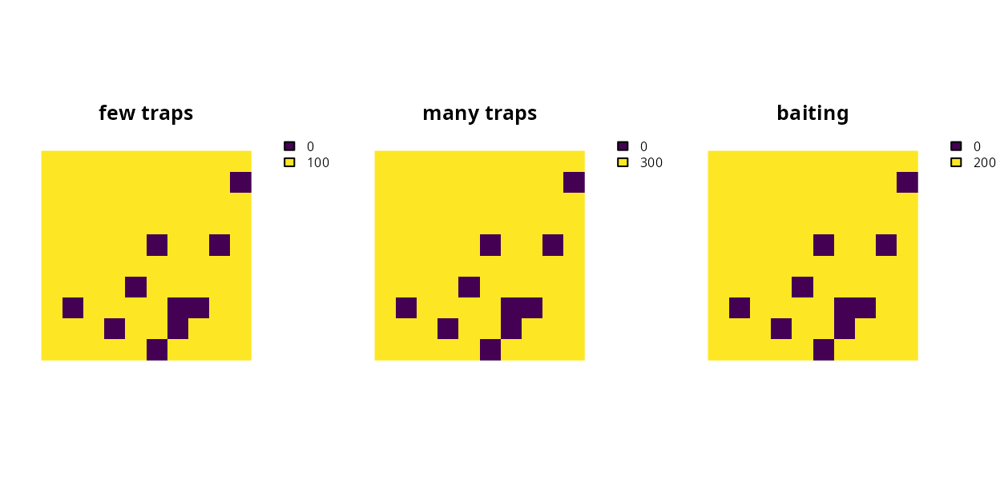
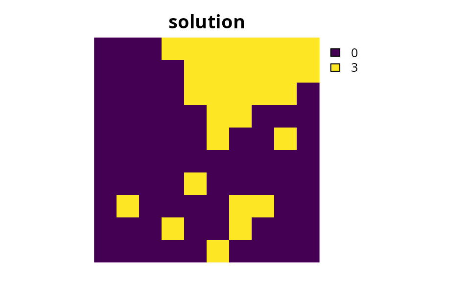
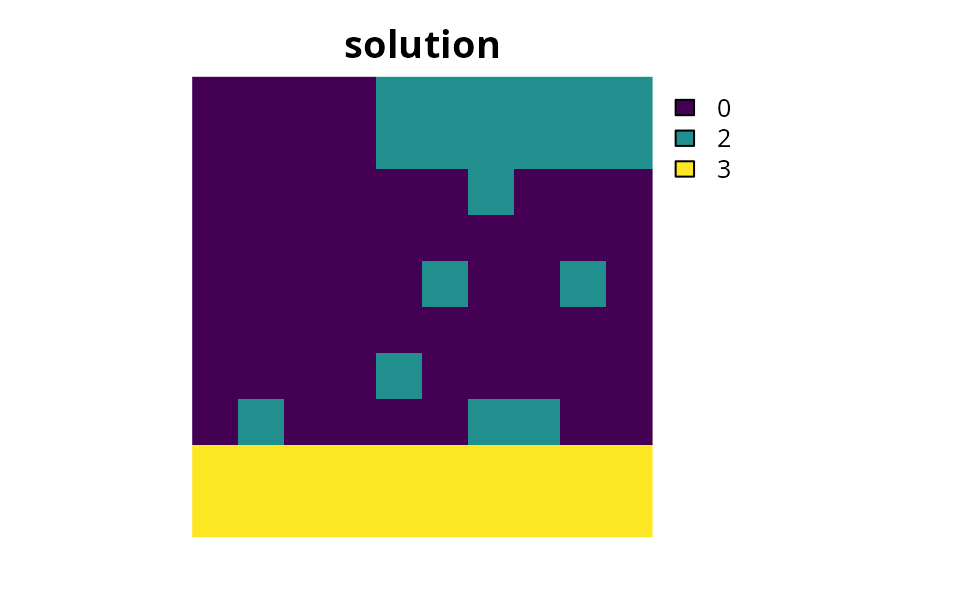

Management zones tutorial
Source:vignettes/management_zones_tutorial.Rmd
management_zones_tutorial.RmdIntroduction
One of the main aims in conservation planning is to identify the most cost-effective set of areas to manage biodiversity (Margules & Pressey 2000). To achieve this, prioritizations are generally created to identify areas for expanding protected area systems. However, many real-world conservation problems do not simply involve deciding if an area should be protected or not (e.g., Klein et al. 2009; Stigner et al. 2016). Instead, many problems involve a range of different management categories and the goal is to determine which areas should be allocated to which management category. For example, a manager might have a range of different methods (e.g., baiting or trapping at various intensities) for controlling invasive pests in a set of different areas (e.g., Cattarino et al. 2018). They would need a prioritization that shows which control methods should be implemented in which areas. In this particular case, a binary prioritization showing which areas contain the most biodiversity is simply not helpful. Furthermore, many real-world problems require decisions that meet multiple, and sometimes conflicting, objectives from different stakeholders. For example, a manager might need to implement a set of no-take and partial-take areas to prevent overfishing, but also ensure that there still remain plenty of areas for fishing activities (e.g., Wilson et al. 2010; Klein et al. 2013). Popularized by the Marxan with Zones decision support tool (Watts et al. 2009), this concept has become known as “zones” and is becoming increasingly important in conservation planning.
The aim of this tutorial is to showcase the zones functionality of the prioritizr R package. It will assume a certain level of familiarity with conservation planning terminology and the package. If you don’t have much experience in either of these topics, we recommend first reading the Package overview vignette.
Usage
Simple minimum set problem
In the prioritizr R package, all conservation planning problems – including those which contain multiple management zones or actions – are initialized using the problem function. To refresh our memory on how we can construct problems, let us quickly construct a simple conservation planning problem. This problem will use the simulated built-in planning unit and feature data distributed with the package. It will have a minimum set objective, targets which require that solution secure to 10 % of the habitat in the study area for each feature, and binary decision variables indicating that planning units are selected or not selected for protection.
# load prioritizr package
library(prioritizr)## Loading required package: sp## Loading required package: raster## Loading required package: sf## Linking to GEOS 3.10.2, GDAL 3.4.1, PROJ 8.2.1; sf_use_s2() is TRUE## Loading required package: proto
# load data
data(sim_pu_raster, sim_features)
# create targets for each of the five features
t1 <- rep(0.1, 5)
# build single-zone problem
p1 <- problem(sim_pu_raster, sim_features) %>%
add_min_set_objective() %>%
add_relative_targets(t1) %>%
add_binary_decisions()
# print problem
print(p1)## Conservation Problem
## planning units: RasterLayer (90 units)
## cost: min: 190.13276, max: 215.86384
## features: layer.1, layer.2, layer.3, ... (5 features)
## objective: Minimum set objective
## targets: Relative targets [targets (min: 0.1, max: 0.1)]
## decisions: Binary decision
## constraints: <none>
## penalties: <none>
## portfolio: default
## solver: default
# solve problem
s1 <- solve(p1)## Gurobi Optimizer version 9.5.2 build v9.5.2rc0 (linux64)
## Thread count: 4 physical cores, 8 logical processors, using up to 1 threads
## Optimize a model with 5 rows, 90 columns and 450 nonzeros
## Model fingerprint: 0x6442bf6e
## Variable types: 0 continuous, 90 integer (90 binary)
## Coefficient statistics:
## Matrix range [2e-01, 9e-01]
## Objective range [2e+02, 2e+02]
## Bounds range [1e+00, 1e+00]
## RHS range [3e+00, 8e+00]
## Found heuristic solution: objective 2337.9617505
## Presolve time: 0.00s
## Presolved: 5 rows, 90 columns, 450 nonzeros
## Variable types: 0 continuous, 90 integer (90 binary)
## Found heuristic solution: objective 2332.1003790
## Root relaxation presolved: 5 rows, 90 columns, 450 nonzeros
##
##
## Root relaxation: objective 1.931582e+03, 12 iterations, 0.00 seconds (0.00 work units)
##
## Nodes | Current Node | Objective Bounds | Work
## Expl Unexpl | Obj Depth IntInf | Incumbent BestBd Gap | It/Node Time
##
## 0 0 1931.58191 0 4 2332.10038 1931.58191 17.2% - 0s
## H 0 0 1987.3985265 1931.58191 2.81% - 0s
##
## Explored 1 nodes (12 simplex iterations) in 0.00 seconds (0.00 work units)
## Thread count was 1 (of 8 available processors)
##
## Solution count 3: 1987.4 2332.1 2337.96
##
## Optimal solution found (tolerance 1.00e-01)
## Best objective 1.987398526526e+03, best bound 1.931581908865e+03, gap 2.8085%
# calculate feature representation
r1 <- eval_feature_representation_summary(p1, s1)
print(r1)## # A tibble: 5 × 5
## summary feature total_amount absolute_held relative_held
## <chr> <chr> <dbl> <dbl> <dbl>
## 1 overall layer.1 83.3 8.91 0.107
## 2 overall layer.2 31.2 3.13 0.100
## 3 overall layer.3 72.0 7.34 0.102
## 4 overall layer.4 42.7 4.35 0.102
## 5 overall layer.5 56.7 6.01 0.106
# plot solution
plot(s1, main = "solution", axes = FALSE, box = FALSE)
Adding management zones
Now let us imagine that instead of having a single management zone (e.g., protected area), we have two management zones. Similar to the example above, we require a solution that secures 10 % of the habitat in the study area for each feature in the first management zone. But we also require a solution that secures 5 % of the habitat in the study area for each feature in the second management zone. Each planning unit must be allocated to either zone or not selected for management at all. In this example, each planning unit costs the same when it is allocated to either of the two zones. We can formulate and solve this problem using the following code.
# create a matrix with the targets
# here each column corresponds to a different zone,
# each row corresponds to a different feature, and
# each cell value corresponds to the target
t2 <- matrix(NA, ncol = 2, nrow = 5)
t2[, 1] <- 0.1
t2[, 2] <- 0.05
# print targets
print(t2)## [,1] [,2]
## [1,] 0.1 0.05
## [2,] 0.1 0.05
## [3,] 0.1 0.05
## [4,] 0.1 0.05
## [5,] 0.1 0.05
# create a zones object that contains the amount of each feature
# in each planning unit when it is allocated to each zone
# since our zones pertain to the same habitat data, we will
# to specify the same habitat data for each zone
z2 <- zones("zone 1" = sim_features, "zone 2" = sim_features)
# print zones
print(z2)## Zones
## zones: zone 1, zone 2 (2 zones)
## features: 1, 2, 3, ... (5 features)
## data type: RasterStack
# create a raster stack with the planning unit data
# since our planning unit costs are the same for each zone,
# we will create a stack with two replicates of the cost data
pu2 <- stack(sim_pu_raster, sim_pu_raster)
# print stack
print(pu2)## class : RasterStack
## dimensions : 10, 10, 100, 2 (nrow, ncol, ncell, nlayers)
## resolution : 0.1, 0.1 (x, y)
## extent : 0, 1, 0, 1 (xmin, xmax, ymin, ymax)
## crs : NA
## names : layer.1, layer.2
## min values : 190.1328, 190.1328
## max values : 215.8638, 215.8638
# build two-zone problem
p2 <- problem(pu2, z2) %>%
add_min_set_objective() %>%
add_relative_targets(t2) %>%
add_binary_decisions()
# print problem
print(p2)## Conservation Problem
## zones: zone 1, zone 2 (2 zones)
## planning units: RasterStack (90 units)
## cost: min: 190.13276, max: 215.86384
## features: 1, 2, 3, ... (5 features)
## objective: Minimum set objective
## targets: Relative targets [targets (min: 0.05, max: 0.1)]
## decisions: Binary decision
## constraints: <none>
## penalties: <none>
## portfolio: default
## solver: default
# solve problem
s2 <- solve(p2)## Gurobi Optimizer version 9.5.2 build v9.5.2rc0 (linux64)
## Thread count: 4 physical cores, 8 logical processors, using up to 1 threads
## Optimize a model with 100 rows, 180 columns and 1080 nonzeros
## Model fingerprint: 0xbdab1647
## Variable types: 0 continuous, 180 integer (180 binary)
## Coefficient statistics:
## Matrix range [2e-01, 1e+00]
## Objective range [2e+02, 2e+02]
## Bounds range [1e+00, 1e+00]
## RHS range [1e+00, 8e+00]
## Found heuristic solution: objective 3568.4931394
## Presolve time: 0.00s
## Presolved: 100 rows, 180 columns, 1080 nonzeros
## Variable types: 0 continuous, 180 integer (180 binary)
## Found heuristic solution: objective 3440.6550560
## Root relaxation presolved: 100 rows, 180 columns, 1080 nonzeros
##
##
## Root relaxation: objective 2.911333e+03, 80 iterations, 0.00 seconds (0.00 work units)
##
## Nodes | Current Node | Objective Bounds | Work
## Expl Unexpl | Obj Depth IntInf | Incumbent BestBd Gap | It/Node Time
##
## 0 0 2911.33335 0 10 3440.65506 2911.33335 15.4% - 0s
## H 0 0 3003.8743974 2911.33335 3.08% - 0s
##
## Explored 1 nodes (83 simplex iterations) in 0.00 seconds (0.00 work units)
## Thread count was 1 (of 8 available processors)
##
## Solution count 3: 3003.87 3440.66 3568.49
##
## Optimal solution found (tolerance 1.00e-01)
## Best objective 3.003874397435e+03, best bound 2.911333350606e+03, gap 3.0807%
# calculate feature representation
r2 <- eval_feature_representation_summary(p2, s2)
print(r2)## # A tibble: 15 × 5
## summary feature total_amount absolute_held relative_held
## <chr> <chr> <dbl> <dbl> <dbl>
## 1 overall 1 167. 13.3 0.0799
## 2 overall 2 62.4 4.75 0.0761
## 3 overall 3 144. 10.9 0.0760
## 4 overall 4 85.3 6.44 0.0755
## 5 overall 5 113. 9.03 0.0796
## 6 zone 1 1 83.3 8.87 0.106
## 7 zone 1 2 31.2 3.18 0.102
## 8 zone 1 3 72.0 7.22 0.100
## 9 zone 1 4 42.7 4.27 0.100
## 10 zone 1 5 56.7 6.07 0.107
## 11 zone 2 1 83.3 4.44 0.0533
## 12 zone 2 2 31.2 1.57 0.0504
## 13 zone 2 3 72.0 3.72 0.0517
## 14 zone 2 4 42.7 2.17 0.0508
## 15 zone 2 5 56.7 2.96 0.0521
# plot solution
# here we use the category layer function to generate raster showing the zone
# that each planning unit was allocated. Specifically, pixels with the
# value 1 are allocated to "zone 1" and pixels with the value 2 are allocated
# to "zone 2". Thus units depicted in gray are not allocated
# to any zone, units depicted in yellow are allocated to zone 1, and units
# depicted in green are allocated to zone 2
plot(category_layer(s2), main = "solution", axes = FALSE, box = FALSE)
Multiple zones with varying costs
Real-world problems often have different costs for managing planning units under different zones. These problems also tend to have different expected amounts of each feature when planning units are managed differently. So let us consider a slightly more complex example. Similar to before we will have two management zones. But this time, the cost of managing each planning unit is different depending on which management zone it is assigned to in the solution. Furthermore, when we assign a planning unit to the second zone, we only expect to end up with half of the habitat we would get if we managed the unit in the first zone (e.g., because the second zone is a partial-take zone and the first zone is a no-take zone). We will use the same target data as in the previous example.
# create new planning unit and cost data
data(sim_pu_zones_stack)
pu3 <- sim_pu_zones_stack[[1:2]]
# plot cost data
plot(pu3, main = c("zone 1", "zone 2"), axes = FALSE, box = FALSE)
# create problem
p3 <- problem(pu3, zones(sim_features, sim_features * 0.5)) %>%
add_min_set_objective() %>%
add_relative_targets(t2) %>%
add_binary_decisions()
# print problem
print(p3)## Conservation Problem
## zones: 1, 2 (2 zones)
## planning units: RasterStack (90 units)
## cost: min: 182.60173, max: 221.36296
## features: 1, 2, 3, ... (5 features)
## objective: Minimum set objective
## targets: Relative targets [targets (min: 0.05, max: 0.1)]
## decisions: Binary decision
## constraints: <none>
## penalties: <none>
## portfolio: default
## solver: default
# solve problem
s3 <- solve(p3)## Gurobi Optimizer version 9.5.2 build v9.5.2rc0 (linux64)
## Thread count: 4 physical cores, 8 logical processors, using up to 1 threads
## Optimize a model with 100 rows, 180 columns and 1080 nonzeros
## Model fingerprint: 0x07455a48
## Variable types: 0 continuous, 180 integer (180 binary)
## Coefficient statistics:
## Matrix range [1e-01, 1e+00]
## Objective range [2e+02, 2e+02]
## Bounds range [1e+00, 1e+00]
## RHS range [8e-01, 8e+00]
## Found heuristic solution: objective 3667.7708672
## Presolve time: 0.00s
## Presolved: 100 rows, 180 columns, 1080 nonzeros
## Variable types: 0 continuous, 180 integer (180 binary)
## Found heuristic solution: objective 3388.0248890
## Root relaxation presolved: 100 rows, 180 columns, 1080 nonzeros
##
##
## Root relaxation: objective 2.884872e+03, 38 iterations, 0.00 seconds (0.00 work units)
##
## Nodes | Current Node | Objective Bounds | Work
## Expl Unexpl | Obj Depth IntInf | Incumbent BestBd Gap | It/Node Time
##
## 0 0 2884.87200 0 8 3388.02489 2884.87200 14.9% - 0s
## H 0 0 2958.1201508 2884.87200 2.48% - 0s
##
## Explored 1 nodes (38 simplex iterations) in 0.00 seconds (0.00 work units)
## Thread count was 1 (of 8 available processors)
##
## Solution count 3: 2958.12 3388.02 3667.77
##
## Optimal solution found (tolerance 1.00e-01)
## Best objective 2.958120150795e+03, best bound 2.884871999973e+03, gap 2.4762%
# calculate feature representation
r3 <- eval_feature_representation_summary(p3, s3)
print(r3)## # A tibble: 15 × 5
## summary feature total_amount absolute_held relative_held
## <chr> <chr> <dbl> <dbl> <dbl>
## 1 overall 1 125. 11.1 0.0891
## 2 overall 2 46.8 3.92 0.0838
## 3 overall 3 108. 9.28 0.0860
## 4 overall 4 64.0 5.37 0.0839
## 5 overall 5 85.1 7.46 0.0877
## 6 1 1 83.3 8.94 0.107
## 7 1 2 31.2 3.13 0.100
## 8 1 3 72.0 7.42 0.103
## 9 1 4 42.7 4.29 0.101
## 10 1 5 56.7 6.01 0.106
## 11 2 1 41.6 2.19 0.0527
## 12 2 2 15.6 0.794 0.0509
## 13 2 3 36.0 1.87 0.0519
## 14 2 4 21.3 1.08 0.0505
## 15 2 5 28.4 1.44 0.0509
# plot solution
plot(category_layer(s3), main = "solution", axes = FALSE, box = FALSE)
Multiple zones with complex targets
So far, we have dealt with problems where each feature has a target that pertains to a single zone. But sometimes we have targets that pertain to multiple zones. For example, what if we were in charge of managing pest control in a set of areas and we had three different pest control methods we could implement in any given planning unit. We could (i) set up a few traps in a given planning unit and make 10 % of the habitat in the unit pest-free, (ii) set up a lot of traps and make 50 % of the habitat in the unit pest-free, or (iii) drop baits over a given planning unit and make 80 % of the planning unit pest-free. Each of these different actions has a different cost, with a few low intensity trapping costing $100 per planning unit, a high intensity trapping costing $300, and baiting costing $200 (please note these costs aren’t meant to be realistic). After defining our management actions and costs, we require a solution that will yield 8 units of pest free habitat per feature. It’s important to note that unlike the previous examples, here we don’t have targets for each feature in each zone, but rather our targets are for each feature and across multiple zones. In other words, we don’t really care which management actions we implement, we just want the set of actions that will meet our targets for minimum expenditure. We can formulate and solve this problem using the following code.
# create planning unit data with costs
pu4 <- stack(Which(!is.na(sim_pu_raster)) * 100,
Which(!is.na(sim_pu_raster)) * 300,
Which(!is.na(sim_pu_raster)) * 200)
names(pu4) <- c("few.traps", "many.traps", "baiting")
# plot planning unit data
plot(pu4, nr = 1, axes = FALSE, box = FALSE)
# create targets
t4 <- tibble::tibble(feature = names(sim_features),
zone = list(names(pu4))[rep(1, 5)],
target = rep(8, 5),
type = rep("absolute", 5))
# print targets
print(t4)## # A tibble: 5 × 4
## feature zone target type
## <chr> <list> <dbl> <chr>
## 1 layer.1 <chr [3]> 8 absolute
## 2 layer.2 <chr [3]> 8 absolute
## 3 layer.3 <chr [3]> 8 absolute
## 4 layer.4 <chr [3]> 8 absolute
## 5 layer.5 <chr [3]> 8 absolute
# create problem
p4 <- problem(pu4, zones(few.traps = sim_features * 0.1,
many.traps = sim_features * 0.5,
baiting = sim_features * 0.8,
feature_names = names(sim_features))) %>%
add_min_set_objective() %>%
add_manual_targets(t4) %>%
add_binary_decisions()
# print problem
print(p4)## Conservation Problem
## zones: few.traps, many.traps, baiting (3 zones)
## planning units: RasterStack (100 units)
## cost: min: 0, max: 300
## features: layer.1, layer.2, layer.3, ... (5 features)
## objective: Minimum set objective
## targets: Absolute targets [targets (min: 8, max: 8)]
## decisions: Binary decision
## constraints: <none>
## penalties: <none>
## portfolio: default
## solver: default
# solve problem
s4 <- solve(p4)## Gurobi Optimizer version 9.5.2 build v9.5.2rc0 (linux64)
## Thread count: 4 physical cores, 8 logical processors, using up to 1 threads
## Optimize a model with 105 rows, 300 columns and 1800 nonzeros
## Model fingerprint: 0xd67e7fdc
## Variable types: 0 continuous, 300 integer (300 binary)
## Coefficient statistics:
## Matrix range [2e-02, 1e+00]
## Objective range [1e+02, 3e+02]
## Bounds range [1e+00, 1e+00]
## RHS range [1e+00, 8e+00]
## Found heuristic solution: objective 9400.0000000
## Presolve removed 14 rows and 120 columns
## Presolve time: 0.00s
## Presolved: 91 rows, 180 columns, 360 nonzeros
## Found heuristic solution: objective 4800.0000000
## Variable types: 0 continuous, 180 integer (180 binary)
## Root relaxation presolved: 91 rows, 180 columns, 360 nonzeros
##
##
## Root relaxation: objective 3.663237e+03, 1 iterations, 0.00 seconds (0.00 work units)
##
## Nodes | Current Node | Objective Bounds | Work
## Expl Unexpl | Obj Depth IntInf | Incumbent BestBd Gap | It/Node Time
##
## 0 0 3663.23657 0 1 4800.00000 3663.23657 23.7% - 0s
## H 0 0 3800.0000000 3663.23657 3.60% - 0s
##
## Explored 1 nodes (1 simplex iterations) in 0.00 seconds (0.00 work units)
## Thread count was 1 (of 8 available processors)
##
## Solution count 3: 3800 4800 9400
##
## Optimal solution found (tolerance 1.00e-01)
## Best objective 3.800000000000e+03, best bound 3.700000000000e+03, gap 2.6316%
# calculate feature representation
r4 <- eval_feature_representation_summary(p4, s4)
print(r4)## # A tibble: 20 × 5
## summary feature total_amount absolute_held relative_held
## <chr> <chr> <dbl> <dbl> <dbl>
## 1 overall layer.1 117. 18.3 0.157
## 2 overall layer.2 43.7 8.19 0.187
## 3 overall layer.3 101. 15.2 0.151
## 4 overall layer.4 59.7 11.6 0.194
## 5 overall layer.5 79.4 12.7 0.161
## 6 few.traps layer.1 8.33 0 0
## 7 few.traps layer.2 3.12 0 0
## 8 few.traps layer.3 7.20 0 0
## 9 few.traps layer.4 4.27 0 0
## 10 few.traps layer.5 5.67 0 0
## 11 many.traps layer.1 41.6 0 0
## 12 many.traps layer.2 15.6 0 0
## 13 many.traps layer.3 36.0 0 0
## 14 many.traps layer.4 21.3 0 0
## 15 many.traps layer.5 28.4 0 0
## 16 baiting layer.1 66.6 18.3 0.275
## 17 baiting layer.2 25.0 8.19 0.328
## 18 baiting layer.3 57.6 15.2 0.264
## 19 baiting layer.4 34.1 11.6 0.340
## 20 baiting layer.5 45.4 12.7 0.281
# plot solution
plot(category_layer(s4), main = "solution", axes = FALSE, box = FALSE)
Multiple zones with extra constraints
So it looks like baiting is the way to go! Except that we might recall that we can’t use baits in most of the planning units because they contain native species that are susceptible to baits. So now we need to specify that which of our planning units cannot be assigned to the third zone (baiting) to obtain a more useful solution.
# create data.frame to specify that we cannot bait in the first 40 units
l5 <- data.frame(pu = seq(1, 80),
zone = "baiting",
status = 0)
# preview locked data
head(l5)## pu zone status
## 1 1 baiting 0
## 2 2 baiting 0
## 3 3 baiting 0
## 4 4 baiting 0
## 5 5 baiting 0
## 6 6 baiting 0
# create problem
p5 <- problem(pu4, zones(few.traps = sim_features * 0.1,
many.traps = sim_features * 0.5,
baiting = sim_features * 0.8,
feature_names = names(sim_features))) %>%
add_min_set_objective() %>%
add_manual_targets(t4) %>%
add_manual_locked_constraints(l5) %>%
add_binary_decisions()
# print problem
print(p5)## Conservation Problem
## zones: few.traps, many.traps, baiting (3 zones)
## planning units: RasterStack (100 units)
## cost: min: 0, max: 300
## features: layer.1, layer.2, layer.3, ... (5 features)
## objective: Minimum set objective
## targets: Absolute targets [targets (min: 8, max: 8)]
## decisions: Binary decision
## constraints: <Manually locked planning units [80 locked units]>
## penalties: <none>
## portfolio: default
## solver: default
# solve problem
s5 <- solve(p5)## Gurobi Optimizer version 9.5.2 build v9.5.2rc0 (linux64)
## Thread count: 4 physical cores, 8 logical processors, using up to 1 threads
## Optimize a model with 105 rows, 300 columns and 1800 nonzeros
## Model fingerprint: 0x4ad99e4b
## Variable types: 0 continuous, 300 integer (300 binary)
## Coefficient statistics:
## Matrix range [2e-02, 1e+00]
## Objective range [1e+02, 3e+02]
## Bounds range [1e+00, 1e+00]
## RHS range [1e+00, 8e+00]
## Found heuristic solution: objective 13600.000000
## Presolve removed 14 rows and 120 columns
## Presolve time: 0.00s
## Presolved: 91 rows, 180 columns, 360 nonzeros
## Found heuristic solution: objective 9600.0000000
## Variable types: 0 continuous, 180 integer (180 binary)
## Root relaxation presolved: 91 rows, 180 columns, 360 nonzeros
##
##
## Root relaxation: objective 6.938068e+03, 1 iterations, 0.00 seconds (0.00 work units)
##
## Nodes | Current Node | Objective Bounds | Work
## Expl Unexpl | Obj Depth IntInf | Incumbent BestBd Gap | It/Node Time
##
## 0 0 6938.06818 0 1 9600.00000 6938.06818 27.7% - 0s
## H 0 0 7000.0000000 6938.06818 0.88% - 0s
## 0 0 6938.06818 0 1 7000.00000 6938.06818 0.88% - 0s
##
## Explored 1 nodes (1 simplex iterations) in 0.00 seconds (0.00 work units)
## Thread count was 1 (of 8 available processors)
##
## Solution count 3: 7000 9600 13600
##
## Optimal solution found (tolerance 1.00e-01)
## Best objective 7.000000000000e+03, best bound 7.000000000000e+03, gap 0.0000%
# calculate feature representation
r5 <- eval_feature_representation_summary(p5, s5)
print(r5)## # A tibble: 20 × 5
## summary feature total_amount absolute_held relative_held
## <chr> <chr> <dbl> <dbl> <dbl>
## 1 overall layer.1 117. 21.8 0.187
## 2 overall layer.2 43.7 8.04 0.184
## 3 overall layer.3 101. 17.7 0.176
## 4 overall layer.4 59.7 10.9 0.182
## 5 overall layer.5 79.4 15.2 0.192
## 6 few.traps layer.1 8.33 0 0
## 7 few.traps layer.2 3.12 0 0
## 8 few.traps layer.3 7.20 0 0
## 9 few.traps layer.4 4.27 0 0
## 10 few.traps layer.5 5.67 0 0
## 11 many.traps layer.1 41.6 7.40 0.178
## 12 many.traps layer.2 15.6 3.42 0.219
## 13 many.traps layer.3 36.0 6.00 0.167
## 14 many.traps layer.4 21.3 4.84 0.227
## 15 many.traps layer.5 28.4 5.26 0.186
## 16 baiting layer.1 66.6 14.4 0.217
## 17 baiting layer.2 25.0 4.62 0.185
## 18 baiting layer.3 57.6 11.7 0.203
## 19 baiting layer.4 34.1 6.05 0.177
## 20 baiting layer.5 45.4 9.98 0.220
# plot solution
plot(category_layer(s5), main = "solution", axes = FALSE, box = FALSE)
Multiple zones with fragmentation penalties
So now the best strategy seems to be a combination of high intensity trapping and baiting. But we can also see that this solution is fairly fragmented, so we can add penalties to cluster managed planning units together. Here we will add penalties that will cluster the planning units allocated to the two trapping zones together, and penalties that will cluster the planning units allocated to the baiting zone together. We will also set an overall penalty factor to 640 to strongly penalize fragmented solutions.
# create matrix that describe boundary penalties between planning units
# allocated to different zones
z6 <- diag(3)
z6[1, 2] <- 1
z6[2, 1] <- 1
colnames(z6) <- c("few.traps", "many.traps", "baiting")
rownames(z6) <- colnames(z6)
# print matrix
print(z6)## few.traps many.traps baiting
## few.traps 1 1 0
## many.traps 1 1 0
## baiting 0 0 1
# create problem
p6 <- problem(pu4, zones("few.traps" = sim_features * 0.1,
"many.traps" = sim_features * 0.5,
"baiting" = sim_features * 0.8,
feature_names = names(sim_features))) %>%
add_min_set_objective() %>%
add_manual_targets(t4) %>%
add_manual_locked_constraints(l5) %>%
add_boundary_penalties(penalty = 640, zones = z6) %>%
add_binary_decisions()
# print problem
print(p6)## Conservation Problem
## zones: few.traps, many.traps, baiting (3 zones)
## planning units: RasterStack (100 units)
## cost: min: 0, max: 300
## features: layer.1, layer.2, layer.3, ... (5 features)
## objective: Minimum set objective
## targets: Absolute targets [targets (min: 8, max: 8)]
## decisions: Binary decision
## constraints: <Manually locked planning units [80 locked units]>
## penalties: <Boundary penalties [edge factor (min: 0.5, max: 0.5), penalty (640), zones]>
## portfolio: default
## solver: default
# solve problem
s6 <- solve(p6)## Gurobi Optimizer version 9.5.2 build v9.5.2rc0 (linux64)
## Thread count: 4 physical cores, 8 logical processors, using up to 1 threads
## Optimize a model with 1905 rows, 1200 columns and 5400 nonzeros
## Model fingerprint: 0xb44cc86f
## Variable types: 0 continuous, 1200 integer (1200 binary)
## Coefficient statistics:
## Matrix range [2e-02, 1e+00]
## Objective range [1e+02, 6e+02]
## Bounds range [1e+00, 1e+00]
## RHS range [1e+00, 8e+00]
## Found heuristic solution: objective 20096.000000
## Presolve removed 1028 rows and 232 columns
## Presolve time: 0.02s
## Presolved: 877 rows, 968 columns, 2712 nonzeros
## Variable types: 0 continuous, 968 integer (968 binary)
## Found heuristic solution: objective 19632.000000
## Root relaxation presolved: 877 rows, 968 columns, 2712 nonzeros
##
##
## Root relaxation: objective 1.005410e+04, 569 iterations, 0.01 seconds (0.01 work units)
##
## Nodes | Current Node | Objective Bounds | Work
## Expl Unexpl | Obj Depth IntInf | Incumbent BestBd Gap | It/Node Time
##
## 0 0 10054.0986 0 57 19632.0000 10054.0986 48.8% - 0s
## H 0 0 11300.000000 10054.0986 11.0% - 0s
## H 0 0 10588.000000 10054.0986 5.04% - 0s
##
## Explored 1 nodes (819 simplex iterations) in 0.03 seconds (0.03 work units)
## Thread count was 1 (of 8 available processors)
##
## Solution count 4: 10588 11300 19632 20096
##
## Optimal solution found (tolerance 1.00e-01)
## Best objective 1.058800000000e+04, best bound 1.005600000000e+04, gap 5.0246%
# calculate feature representation
r6 <- eval_feature_representation_summary(p6, s6)
print(r6)## # A tibble: 20 × 5
## summary feature total_amount absolute_held relative_held
## <chr> <chr> <dbl> <dbl> <dbl>
## 1 overall layer.1 117. 22.5 0.193
## 2 overall layer.2 43.7 8.06 0.184
## 3 overall layer.3 101. 18.0 0.179
## 4 overall layer.4 59.7 11.6 0.193
## 5 overall layer.5 79.4 15.6 0.197
## 6 few.traps layer.1 8.33 0 0
## 7 few.traps layer.2 3.12 0 0
## 8 few.traps layer.3 7.20 0 0
## 9 few.traps layer.4 4.27 0 0
## 10 few.traps layer.5 5.67 0 0
## 11 many.traps layer.1 41.6 8.01 0.192
## 12 many.traps layer.2 15.6 3.44 0.221
## 13 many.traps layer.3 36.0 6.31 0.175
## 14 many.traps layer.4 21.3 5.50 0.258
## 15 many.traps layer.5 28.4 5.62 0.198
## 16 baiting layer.1 66.6 14.4 0.217
## 17 baiting layer.2 25.0 4.62 0.185
## 18 baiting layer.3 57.6 11.7 0.203
## 19 baiting layer.4 34.1 6.05 0.177
## 20 baiting layer.5 45.4 9.98 0.220
# plot solution
plot(category_layer(s6), main = "solution", axes = FALSE, box = FALSE)
Finally, it appears we might have a viable solution for this made-up conservation problem.
Multiple zones with fragmentation penalties and mandatory allocations
Finally, we might be interested in conservation planning scenarios where every single planning unit must be allocated to a management zone. This is often the case when developing land-use plans where every single planning unit needs to be allocated to a specific management zone. Though it makes less sense here, let’s see what happens to the solution if we needed to do at least one form of control in every single planning unit.
# create matrix that describe boundary penalties between planning units
# allocated to different zones
p7 <- problem(pu4, zones("few.traps" = sim_features * 0.1,
"many.traps" = sim_features * 0.5,
"baiting" = sim_features * 0.8,
feature_names = names(sim_features))) %>%
add_min_set_objective() %>%
add_manual_targets(t4) %>%
add_mandatory_allocation_constraints() %>%
add_manual_locked_constraints(l5) %>%
add_boundary_penalties(penalty = 640, zones = z6) %>%
add_binary_decisions()
# print problem
print(p7)## Conservation Problem
## zones: few.traps, many.traps, baiting (3 zones)
## planning units: RasterStack (100 units)
## cost: min: 0, max: 300
## features: layer.1, layer.2, layer.3, ... (5 features)
## objective: Minimum set objective
## targets: Absolute targets [targets (min: 8, max: 8)]
## decisions: Binary decision
## constraints: <Manually locked planning units [80 locked units]
## Mandatory allocation constraints [apply constraints? (1)]>
## penalties: <Boundary penalties [edge factor (min: 0.5, max: 0.5), penalty (640), zones]>
## portfolio: default
## solver: default
# solve problem
s7 <- solve(p7)## Gurobi Optimizer version 9.5.2 build v9.5.2rc0 (linux64)
## Thread count: 4 physical cores, 8 logical processors, using up to 1 threads
## Optimize a model with 1905 rows, 1200 columns and 5400 nonzeros
## Model fingerprint: 0x89a9dafb
## Variable types: 0 continuous, 1200 integer (1200 binary)
## Coefficient statistics:
## Matrix range [2e-02, 1e+00]
## Objective range [1e+02, 6e+02]
## Bounds range [1e+00, 1e+00]
## RHS range [1e+00, 8e+00]
## Found heuristic solution: objective 19600.000000
## Presolve removed 1120 rows and 324 columns
## Presolve time: 0.02s
## Presolved: 785 rows, 876 columns, 2448 nonzeros
## Variable types: 0 continuous, 876 integer (876 binary)
## Found heuristic solution: objective 18988.000000
## Root relaxation presolved: 785 rows, 876 columns, 2448 nonzeros
##
##
## Root relaxation: objective 1.323093e+04, 274 iterations, 0.00 seconds (0.00 work units)
##
## Nodes | Current Node | Objective Bounds | Work
## Expl Unexpl | Obj Depth IntInf | Incumbent BestBd Gap | It/Node Time
##
## 0 0 13230.9255 0 95 18988.0000 13230.9255 30.3% - 0s
## H 0 0 13260.000000 13230.9255 0.22% - 0s
##
## Explored 1 nodes (412 simplex iterations) in 0.03 seconds (0.03 work units)
## Thread count was 1 (of 8 available processors)
##
## Solution count 3: 13260 18988 19600
##
## Optimal solution found (tolerance 1.00e-01)
## Best objective 1.326000000000e+04, best bound 1.323200000000e+04, gap 0.2112%
# calculate feature representation
r7 <- eval_feature_representation_summary(p7, s7)
print(r7)## # A tibble: 20 × 5
## summary feature total_amount absolute_held relative_held
## <chr> <chr> <dbl> <dbl> <dbl>
## 1 overall layer.1 117. 23.4 0.201
## 2 overall layer.2 43.7 8.04 0.184
## 3 overall layer.3 101. 19.4 0.192
## 4 overall layer.4 59.7 10.9 0.182
## 5 overall layer.5 79.4 16.1 0.203
## 6 few.traps layer.1 8.33 5.92 0.711
## 7 few.traps layer.2 3.12 2.33 0.745
## 8 few.traps layer.3 7.20 5.25 0.730
## 9 few.traps layer.4 4.27 3.18 0.745
## 10 few.traps layer.5 5.67 4.00 0.706
## 11 many.traps layer.1 41.6 3.02 0.0725
## 12 many.traps layer.2 15.6 1.09 0.0700
## 13 many.traps layer.3 36.0 2.41 0.0670
## 14 many.traps layer.4 21.3 1.66 0.0779
## 15 many.traps layer.5 28.4 2.11 0.0743
## 16 baiting layer.1 66.6 14.4 0.217
## 17 baiting layer.2 25.0 4.62 0.185
## 18 baiting layer.3 57.6 11.7 0.203
## 19 baiting layer.4 34.1 6.05 0.177
## 20 baiting layer.5 45.4 9.98 0.220
# plot solution
plot(category_layer(s7), main = "solution", axes = FALSE, box = FALSE)Conclusion
Hopefully, this vignette has provided an informative introduction to building and solving problems with multiple zones. Although we have examined only a few different functions here, almost every single function for modifying conservation planning problems is compatible with problems that contain zones. It’s worth noting that working with multiple zones is a lot trickier than working with a single zone, so we would recommend playing around with the code in the Examples sections of the package documentation to help understand how functions work when applied to multiple zones.